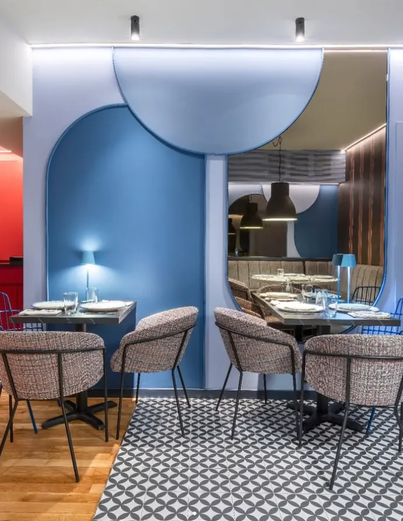
RestauranteRetiro
El clásico. Arte en las paredes, manteles blancos y sabor sin compromiso.
Horario
- C/ Antonio Arias, 4 · 28009 Madrid
- Mar–Jue 13–16 h · 20–23 h
Vie–Dom 13–23 h · Lunes cerrado - 912 345 678
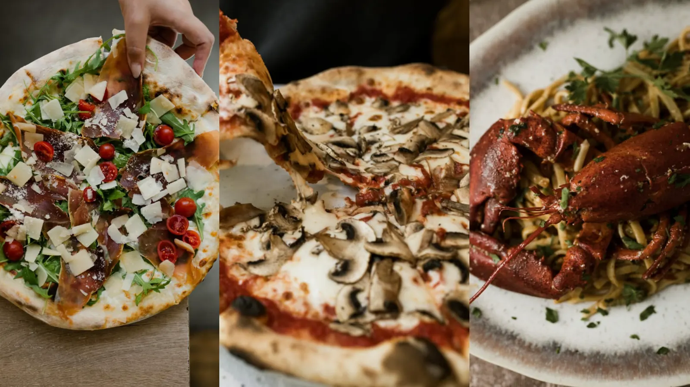
Due regioni, una cucina — en el corazón de Madrid
Un cocinero sardo y otro de las Marcas se conocieron entre fogones y decidieron cocinar juntos. Pizza al horno, pasta fresca y cannoli rellenos al momento, en Retiro, Chueca y Lavapiés.
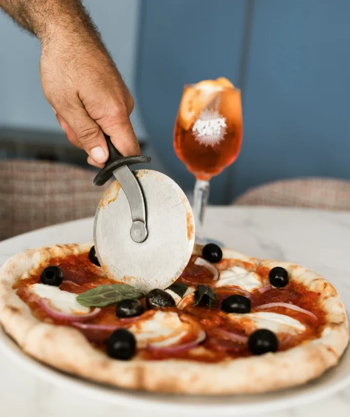
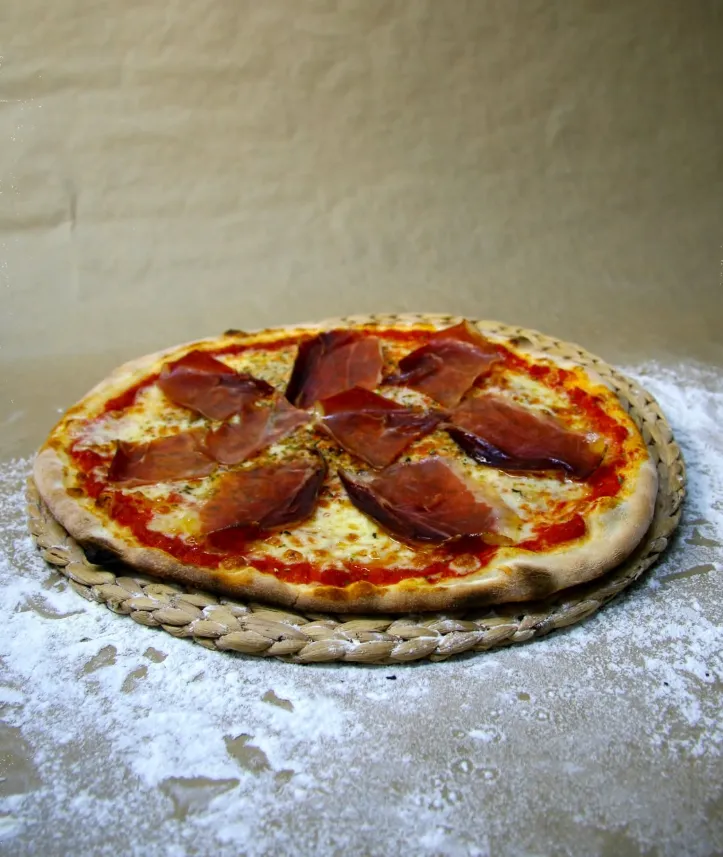
Se conocieron trabajando de cocineros en la misma cocina de un restaurante. Compartieron turnos, recetas y largas discusiones sobre cuánto debe reposar una masa. Un día dejaron de discutir y abrieron la suya.
La isla
Del mar y de los pastores: el pecorino, el pane carasau que cruje como papel y la costumbre de no tener nunca prisa en la mesa.
Entre los Apeninos y el Adriático
De una región que se toma muy en serio la pasta al huevo, las olive all’ascolana y el trabajo hecho a mano, sin atajos.
Fratelli d’Italia: dos regiones, una cocina y tres direcciones en el corazón de Madrid.
48 horas de fermentación lenta. Ligera, crujiente y fácil de digerir.
DOP, traído de la Campania italiana cada semana.
Mozzarella fresca de primera calidad. Nada de imitaciones.
A 450 °C durante 90 segundos. Así se hace.
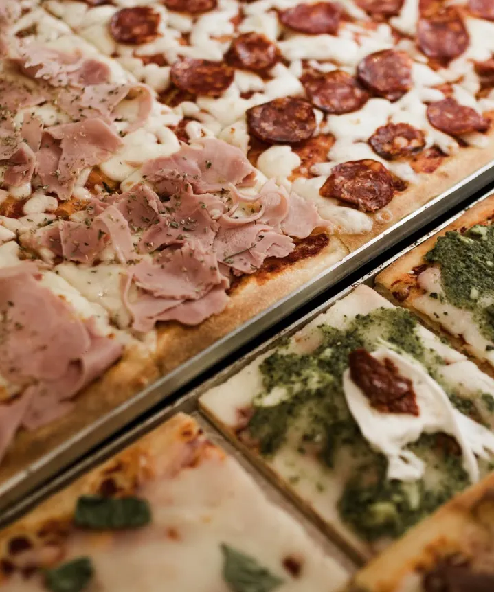
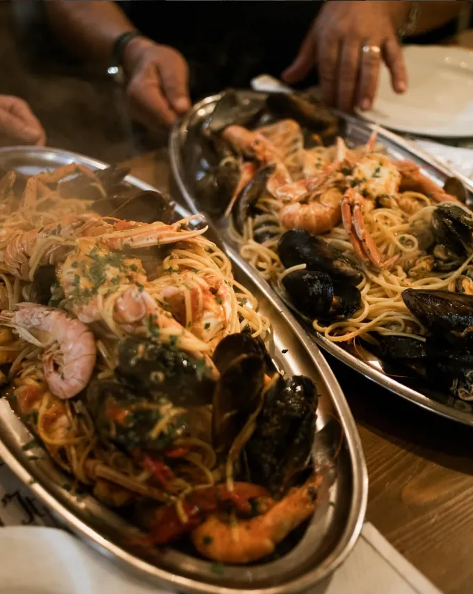
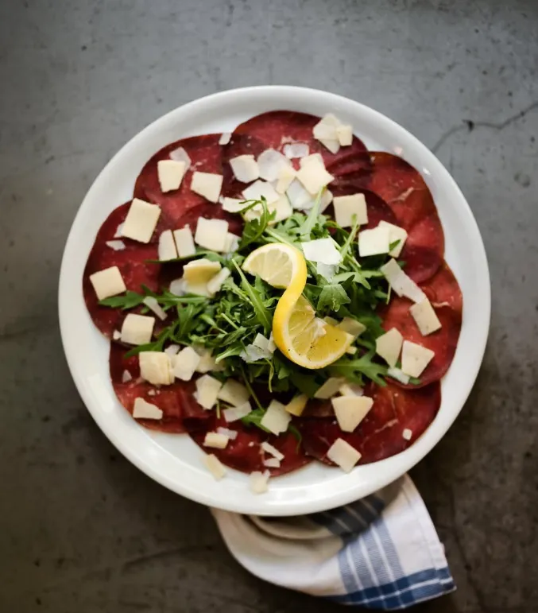
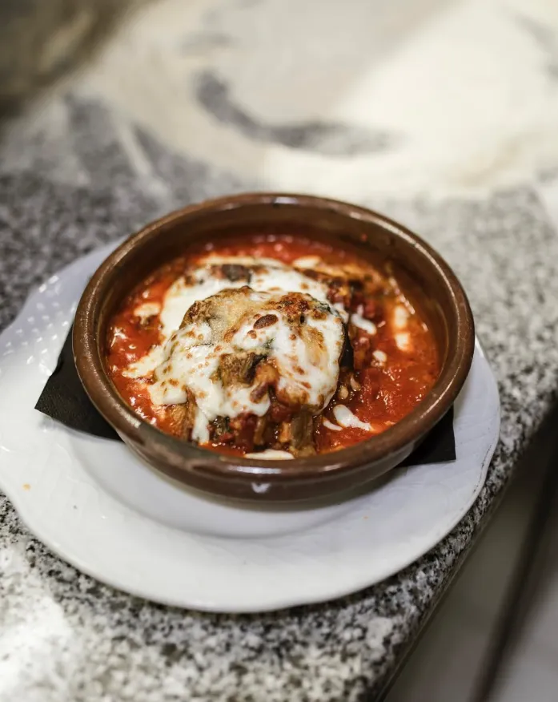
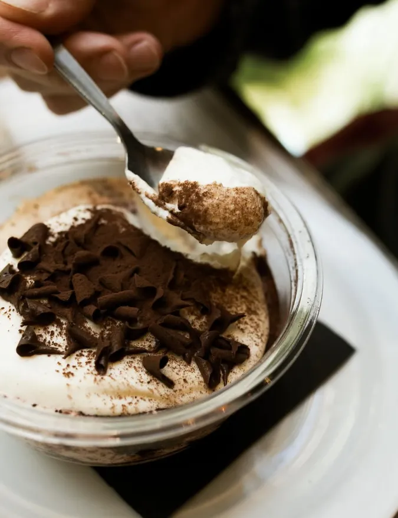
Dos restaurantes para sentarse sin prisa y un take away para llevarse la pizza por porciones. Mismo horno, misma masa.

RestauranteEl clásico. Arte en las paredes, manteles blancos y sabor sin compromiso.
Horario
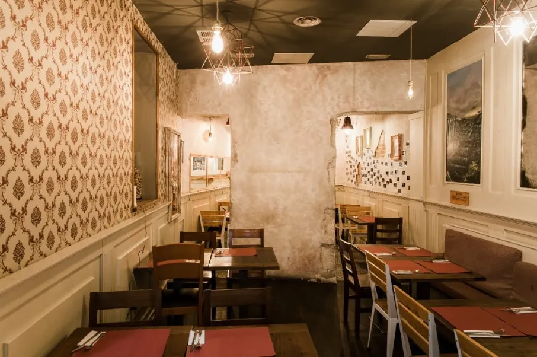
RestauranteEl alma urbana. El mismo sabor en el corazón más vivo de la ciudad.
Horario
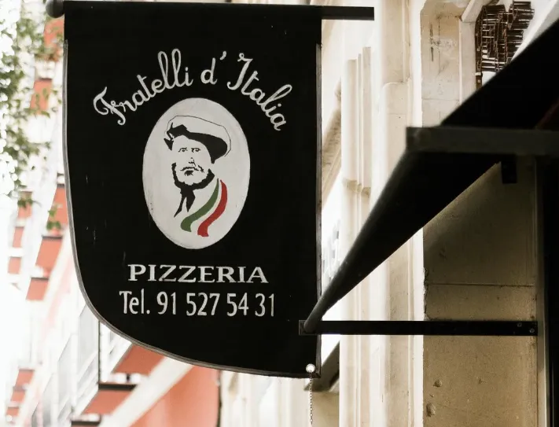
Take awayEl más canalla. Porciones, cannoli y toda la energía del barrio, para llevar.
Horario
Una carta corta y honesta. Lo que está, está porque es bueno.
Salsa de tomate, ajo, aceite de oliva y orégano.
ClásicoBase blanca, burrata fresca, prosciutto crudo 18 meses, rúcula, reducción de balsámico.
Del chefTomate, mozzarella, salame piccante calabrese, guindilla.
La más pedidaBase de crema de trufa, mozzarella, porcini frescos, parmesano, tomillo.
Tomate, mozzarella, jamón cocido, alcachofas, aceitunas negras, champiñones.
Tomate, mozzarella, pimientos asados, berenjenas, calabacín, rúcula.
VegetarianaPan de masa madre, tomate concassé, ajo, AOVE, albahaca.
Selección de mortadela, ’nduja, coppa y prosciutto con focaccia.
Croquetas de arroz rellenas de ragú y mozzarella. 4 unidades.
FavoritoBurrata fresca con tomates cherry asados, pesto y aceite de albahaca.
Spaghetti, guanciale, huevo, Pecorino Romano DOP. Sin nata, como Dios manda.
ClásicoPasta larga con ragú de ternera cocinado 6 horas.
EspecialRigatoni, guanciale, tomate San Marzano, guindilla, Pecorino.
Tagliatelle frescos, pesto genovese DOP, piñones tostados, parmesano.
VegetarianaBarquillo crujiente relleno al momento de ricotta con naranja y chips de chocolate. La firma de la casa.
ImprescindiblePanna cotta cremosa con coulis de pistacho de Bronte y frutos rojos.
Receta tradicional con savoiardi, mascarpone, espresso y marsala.
Tres bolas de helado artesanal. Sabores del día, según disponibilidad.
«La mejor pizza que he comido fuera de Nápoles. La masa es increíble: ligera, con ese borde perfecto. La Diavola es adictiva.»
«Los cannoli de Lavapiés los rellenan al momento y el barquillo está perfectamente crujiente. Los pido cada semana.»
«Cena perfecta en Chueca: ambiente íntimo, servicio atentísimo y una carbonara sin nata para quitarse el sombrero.»
Mesa en Retiro o en Chueca, o pizza a domicilio desde Lavapiés. Como quieras, cuando quieras.
Desde Lavapiés enviamos a domicilio a través de Glovo. También nos encuentras en Uber Eats y Just Eat.